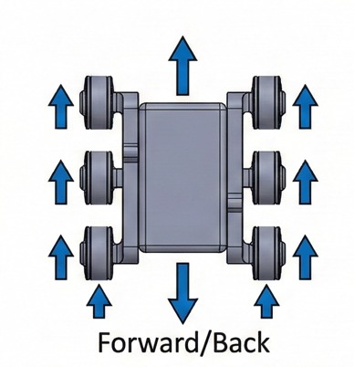
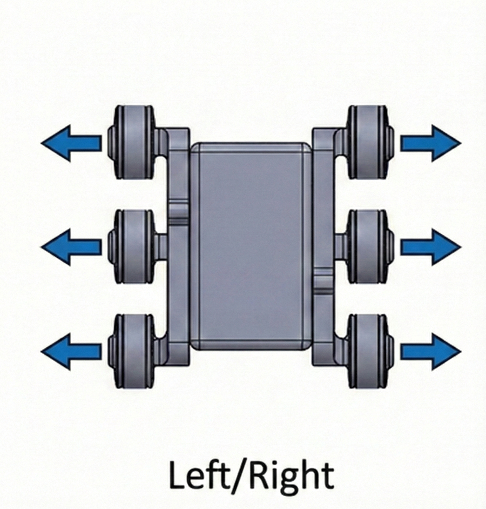
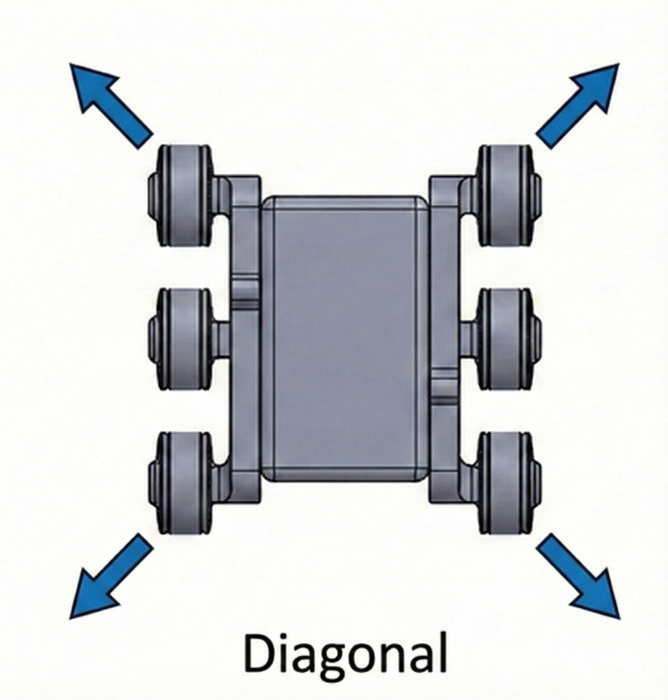

Mechanical Design
03 / 05

SolidWorks › URDF/Xacro › ROS2 › Isaac Sim
A full digital twin of a rocker-bogie rover, built from SolidWorks CAD through URDF/Xacro export to a ROS2 control stack. A custom swerve-drive controller handles omnidirectional motion: straight runs, lateral strafes, diagonal strafes, and Ackermann steering.
I validated the same controller across three environments, RViz2, Gazebo, and NVIDIA Isaac Sim, all driven through one ROS2 bridge so the path from simulation to hardware stays short.




The kinematic model starts in SolidWorks, where I lay out the rocker-bogie suspension and the pivot linkages that let each side of the chassis articulate independently over uneven terrain. I export the assembly to URDF/Xacro, preserving joint limits and inertial properties so the simulated rover matches the physical one.
The swerve-drive controller runs on ROS2 and computes independent wheel angle and speed for each of the four corners, which is what makes forward, lateral, diagonal, and Ackermann motion possible from the same hardware. I run that controller unmodified across RViz2, Gazebo, and Isaac Sim, so behavior validated in simulation carries over to a real build without a separate control rewrite.